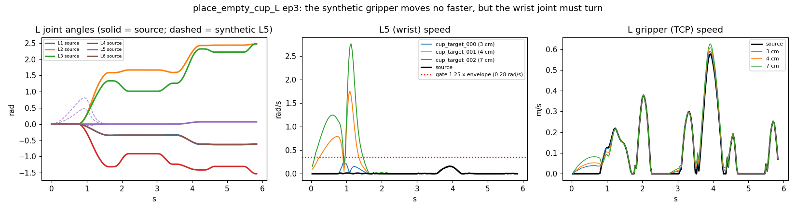
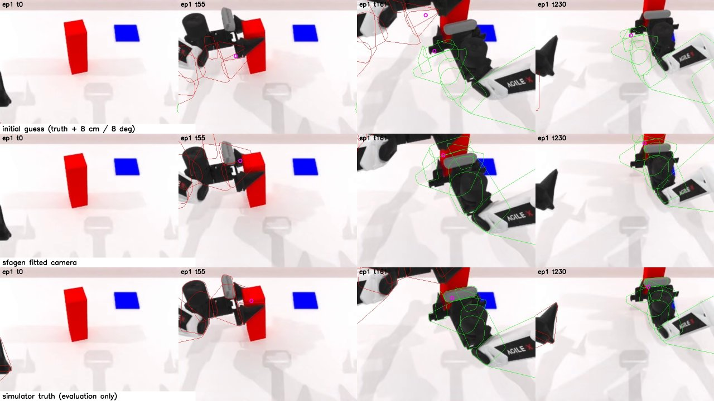
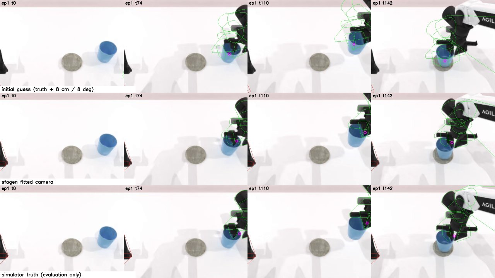
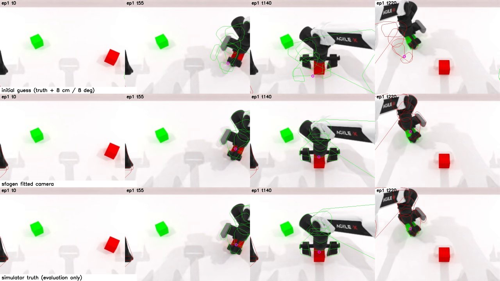
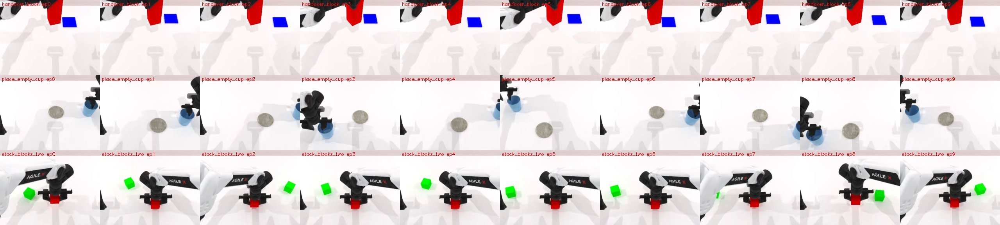

R01 · RoboTwin 2.0 data-only pilot (S1)
2026-11-15 · Opus 5.5 · branch research/sfagen-simbench (sfagen unchanged from 49957aa) · first-party, pending review · full text: R01_robotwin_data_only.md
In plain words. sfagen moves the object to a new spot and bends the recorded arm motion to reach it. In RoboTwin, every demo starts with the arm folded straight (all joints 0). sfagen starts bending the motion right there, and from that folded pose a sideways shift of a few centimetres makes the wrist swing (up to 0.8 rad) and swing back. The gripper itself moves no faster than in the demo, but RoboTwin's planner never turns that wrist joint fast, so the speed check rejects every candidate. I stopped as the plan says; the fix is a method change and is your call.
1 · Why nothing passed

| shift | n | median max joint-speed ratio (gate 1.25) | ≤ 1.25 | median gripper peak-speed ratio |
|---|---|---|---|---|
| 0–4 cm | 51 | 1.88 | 19 | 1.00 |
| 4–8 cm | 134 | 4.47 | 6 | 1.01 |
| 8–12 cm | 154 | 7.10 | 0 | 0.99 |
| task | family | candidates | pass | first failed gate |
|---|---|---|---|---|
| place_empty_cup | object position (3 cm grid) | 339 | 0 | speed 314, accel 16, mesh 5, object 4 |
| place_empty_cup | interaction location / timing | 100 | 0 | not applicable (hands never within 20 cm) |
| handover_block | stopped at reconstruction (6/10 episodes) | |||
| stack_blocks_two | not started | |||
Start pose is near-singular: manipulability 1.2e-3 vs 1.7–2.4e-2 during the reach. 91 % of the worst frames fall before motion onset + 0.5 s.
Cause: workspace_plan.py:136-138 (wide blend starts at frame 0) + checks.py:151 (per-joint envelope from 4–6 demos).
| Option | What | Counterfactual / risk |
|---|---|---|
| A (recommended) | Start the blend only once the arm is well conditioned; ramp through the approach to t_grasp − 3. One rule for every robot, no retiming. | Removes the cause; TCP speed may rise (speed_similarity decides); OpenArm regression needed |
| B | Robot-level speed envelope (p95 of 11 000 demos of other RoboTwin tasks) | 190/339 pass speed+accel; admits the wrist swing; changes a gate after seeing data |
| C | Report RoboTwin object-position yield 0 % | Loses or weakens the benchmark |
2 · Camera fit: adopted, still far from truth
Rows: initial guess (truth + 8°/8 cm offset) · fitted · truth (evaluation only). Fitted reprojection median 35 / 26 / 16 px (initial 81).



| task | held-out IoU | rot err | centre err | focal ratio | table est. (truth 0.74 m) |
|---|---|---|---|---|---|
| handover_block | 0.242 → 0.496 | 5.2° | 12.9 cm | 0.947 | 0.736 (−0.4 cm) |
| place_empty_cup | 0.208 → 0.477 | 8.8° | 8.3 cm | 0.941 | 0.783 (+4.3 cm) |
| stack_blocks_two | 0.382 → 0.632 | 6.1° | 6.7 cm | 0.962 | 0.724 (−1.6 cm) |
3 · Source demos (40 % into each episode)

Note the large robot shadows on the table (not modelled by the renderer) and the handover block cut off at the top edge.
Videos
None: no candidate passed, so nothing was rendered. Side-by-side videos come after a fix.